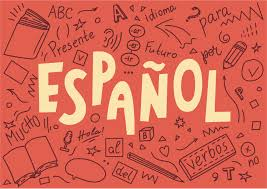

One group I belong to is my family. I talk to all of my family members the same way. Around my family I talk more and louder because I am comfortable around them. One difference I can think of is the words I use. Around my sibling, I speak like how I would speak everyday. But to my parents, I use different vocabulary. For example, I say “yea” or “nah” when talking to my siblings. But around my parents I say “yes” and “no”.
Another group I belong to is the football team. I also talk to everybody on this team the same way. The thing is, I don't really talk much at all. There are a lot of people and I feel like they do enough talking. But when I do talk it's something similar to the dynamic I have at home. With the teammates I would use more informal talk. But with my coaches, I try to be more formal and respectful because they are in authority positions.
Last group I belong to is this English class. I don't really talk much in this English class but when I do I like to think that it is relatively the same to how I always speak. I do try to use extra formal words though because not everybody understands the different slang words that I speak sometimes. I try to use words that I know everybody will understand off the rip with no explanation needed.
Over the weekend, I went to Chic fil A. I eavesdropped on a conversation between a Hispanic mother and son speaking in Spanish. I couldn't understand what they were saying though as I don’t speak Spanish but the conversation sounded serious.
They were talking pretty fast, but by the expressions on the woman's face I could tell it was no joking matter. One thing that shocked me was sometimes when the son spoke, he would sneak an English word into the sentence like from the excerpt we heard.
That was cool to see in real life after seeing it in the book and not knowing people did it prior. It is always great to see things that you have learned being applied in real life. It makes you feel like the things you are learning about actually matter.
